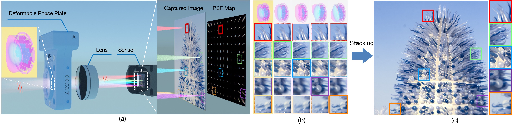

Fovea Stacking: Imaging with Dynamic Localized Aberration Correction.
Shi Mao, Yogeshwar Nath Mishra, Wolfgang Heidrich
ACM Trans. Graphics (Proc. SIGGRAPH Asia), 2025

Fovea Stacking is a novel computational camera paradigm aimed at simplifying (and ultimately miniaturizing) camera optics.
(a) The optical system consists of an achromatic doublet lens, which is highly aberrated, and a refractive deformable phase plate (DPP), which can be used to correct the aberrations for a local region of interest (the fovea). While this optical system cannot simultaneously correct all aberrations across the entire image, the DPP is capable of dynamically moving the fovea anywhere in the image. For example, the DPP deformation in (a) corrects aberrations along the red beam for the corresponding red box fovea on the sensor.
(b) shows magnified crops of foveated images captured with different DPP deformations. The left column shows the image from (a), the other columns have the fovea moved to the other respective boxes.
(c) By stacking up the sharpest regions from different foveated images (i.e. a fovea stack), an un-aberrated all-in-focus image can be recovered. Other applications such as object tracking and depth-dependent focusing are discussed in the text.
Abstract
The desire for cameras with smaller form factors has recently led to a push for exploring computational imaging systems with reduced optical complexity
such as a smaller number of lens elements. Unfortunately such simplified optical systems usually suffer from severe aberrations, especially in off-axis
regions, which can be difficult to correct purely in software.
In this paper we introduce Fovea Stacking, a new type of imaging system that utilizes an emerging dynamic optical component called the deformable phase plate (DPP) for localized aberration correction anywhere on the image sensor. By optimizing DPP deformations through a differentiable optical
model, off-axis aberrations are corrected locally, producing a foveated image with enhanced sharpness at the fixation point - analogous to the eye’s fovea.
Stacking multiple such foveated images, each with a different fixation point, yields a composite image free from aberrations. To efficiently cover the entire
field of view, we propose joint optimization of DPP deformations under imaging budget constraints. Due to the DPP device’s non-linear behavior,
we introduce a neural network-based control model for improved agreement between simulation and hardware performance.
We further demonstrated that for extended depth-of-field imaging, Fovea Stacking outperforms traditional focus stacking in image quality. By integrating object detection or eye-tracking, the system can dynamically adjust the lens to track the object of interest-enabling real-time foveated video
suitable for downstream applications such as surveillance or foveated virtual reality displays.
Paper
Paper [Mao2025FoveaStack.pdf (15.8MB)]
Supplementary [Mao2025FoveaStack_supp.pdf (9.4MB)]
Project Page [Project Page]